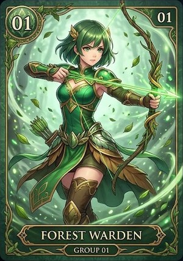
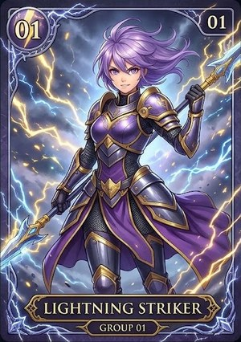
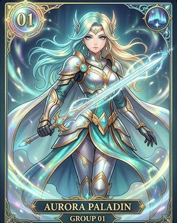
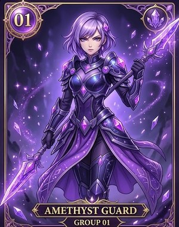
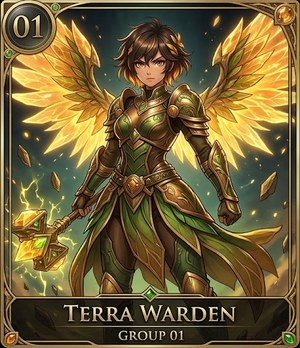
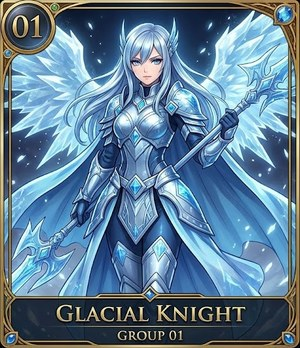
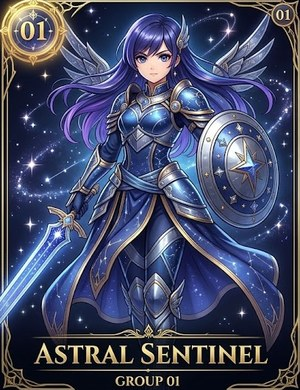
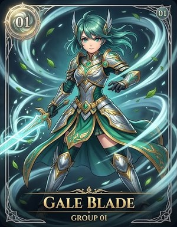
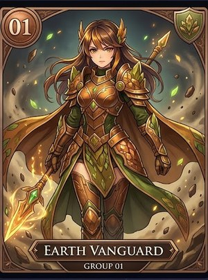

💡 第三十九次：請老師看、請老師回答（C46）
這一頁：① b／p、d／t 語音 試聽（C45 ⑤ 甲） ② 突擊 題 拿掉 了＋我 的 建議（第 2 點） ③ 拖曳 題 新 玩法（第 1 點） ④ name 新 圖示（第 3 點） ⑤ 女戰士 ★ 基本（第 4 點） ⑥ C45 ③ 甲 做好 了。
① b／p、d／t 字首音：舊、A、B 三種 請 老師 戴 耳機 聽
A網站 現在 的 男聲 檔 不動，只 在 p、t 後面 補上「吹氣」（我 量 了：現在 的 pen、pig 幾乎 沒有 吹氣，只 有 25～40 毫秒）➜ 大約 85 毫秒。b、d 跟 舊 的 一模一樣。
B換 女聲、慢 0.6（電腦 聽寫 聽錯 ＝ 換 速度 再 試）。
電腦 聽寫（Whisper）聽 對 幾個：舊 14 ／ 16 A 15 ／ 16 B 11 ／ 16（tent 的 舊 和 A 聽寫 寫成「tent, tent, tent…」＝ 電腦 自己 重複，聲音 其實 是 tent）
| 字 | 舊（網站 現在） | A 補 吹氣 | B 女聲 慢 |
|---|
bag
包包 |
✅ bag |
✅ bag
b、d 不 動（跟 舊 一樣） |
❌ ban
女聲 慢 0.8 |
bell
鈴 |
✅ bell |
✅ bell
b、d 不 動（跟 舊 一樣） |
✅ bell
女聲 慢 0.6 |
box
盒子 |
✅ box |
✅ box
b、d 不 動（跟 舊 一樣） |
✅ box
女聲 慢 0.6 |
ball
球 |
✅ ball |
✅ ball
b、d 不 動（跟 舊 一樣） |
✅ ball
女聲 慢 0.6 |
dog
狗 |
✅ dog |
✅ dog
b、d 不 動（跟 舊 一樣） |
✅ dog
女聲 慢 0.58 |
doll
娃娃 |
✅ doll |
✅ doll
b、d 不 動（跟 舊 一樣） |
✅ doll
女聲 慢 0.6 |
door
門 |
✅ door |
✅ door
b、d 不 動（跟 舊 一樣） |
✅ door
女聲 慢 0.6 |
desk
書桌 |
✅ desk |
✅ desk
b、d 不 動（跟 舊 一樣） |
✅ desk
女聲 慢 0.6 |
pen
筆 |
❌ n |
✅ pen
吹氣 25 ➜ 85 毫秒 |
✅ pen
女聲 慢 0.58 |
pig
豬 |
✅ pig |
✅ pig
吹氣 40 ➜ 85 毫秒 |
❌ pay
女聲 慢 0.8 |
panda
貓熊 |
✅ panda |
✅ panda
吹氣 已經 夠（不 動） |
✅ panda
女聲 慢 0.6 |
pot
鍋子 |
✅ pot |
✅ pot
吹氣 已經 夠（不 動） |
✅ pot
女聲 慢 0.55 |
ten
十 |
✅ 10 |
✅ 10
吹氣 50 ➜ 85 毫秒 |
✅ 10
女聲 慢 0.7 |
tiger
老虎 |
✅ Tiger |
✅ tiger
吹氣 35 ➜ 85 毫秒 |
❌ Heiger
女聲 慢 0.8 |
tent
帳篷 |
❌ tent, tent, tent, tent, tent, tent |
❌ tent, tent, tent, tent, tent, tent
吹氣 已經 夠（不 動） |
❌ n, [buzzing noise]
女聲 慢 0.8 |
toy
玩具 |
✅ toy |
✅ toy
吹氣 已經 夠（不 動） |
❌ "poy"
女聲 慢 0.8 |
我 建議 A：只 改 p、t 的 那 一口 氣，其他 都 跟 學生 聽慣 的 一樣；B 有 5 個 電腦 聽錯（例如 toy 聽成 boy、pig 聽成 pay），換 聲音 反而 容易 混。
請 老師 回答：⑤ A／⑤ B／⑤ 舊（也 可以 只 換 幾個 字，例：⑤ A：pen pig）。老師 選了 才 換 進 網站。
② 第 2 點：秒懂 複習 動畫 的 突擊 題 ── 已經 全部 先 拿掉
✅ 三年級、四年級 的 25 題 闖關、25／50 題、新 25／新 50、⚡ 現場任務：秒懂 動畫 照樣 演（教 重點），一題 突擊 題 都 不 跳出來；開場 不 再 說「會 跳出 突擊 測驗」、看完 不 再 算 答對 幾題、兩人 輪流 的 說明 也 拿掉 那一句。
題目 和 程式 都 留著（一個 開關），以後 要 加 回來 只 要 打開。
我 的 建議（請 老師 選，可以 選 好幾個）：
甲（建議）就 這樣 不 加 回來：動畫 後面 的 正式 題目 本身 就是「考考 自己」（提取 練習），學 得 一樣 好；再 加 突擊 題 ＝ 同一個 重點 考 兩次，變長、變 悶。
乙以後 想 加：每 一部 只 1 題、放在 動畫 最後、不 計分（不 打斷、不 緊張）。
丙動畫 變短：同一位 學生 第一次 看 ＝ 完整（唸 兩遍）；第二次 以後 ＝ 每一頁 只 唸 一遍（大約 短 一半，沒有 跳過 鍵，還是 看得到 全部 重點）── 會 的 學生 不 用 再 等，低成就 的 學生 第一次 照樣 完整 學。
請 老師 回答：② 甲／② 乙／② 丙／② 甲＋丙。
③ 第 1 點：拖曳 題 不 無聊（已經 做好）
放在：🔓 句子 解碼（三年級、四年級、25 題 闖關、現場任務）、三年級 🌱 皮克敏 搬字、📋 資料表 小幫手（全部 有 拖曳 的 題目）。秒懂 教學 不 加。
🎁 神秘 寶箱（每一題 隨機 1 個 方塊 背 寶箱）
| 寶箱 | 多 常 出現 | 打開 會 拿到（隨機 一種） |
|---|
| 🟫 木頭 | 55% | 🪙 ＋200、🪙 ＋300、🔦 透視 一格、🛡 盾牌（放錯 一次 連對 不 斷） |
| ⚪ 銀 | 28% | 🪙 ＋400、🔥 這一題 ✖2、🔦 透視 一格、🛡 盾牌 |
| 🟡 金 | 13% | 🪙 ＋800、🪙 ＋600、🔥 這一題 ✖2 |
| 💎 彩虹（一 出現 就 是 彩虹 光） | 4% | 🌈 這一題 ✖3、🪙 ＋1500 |
放對 格子 ＝ 寶箱 搖一搖 ➜ 蓋子 掀開 ➜ 金光 ＋ 金幣 噴 出來 ➜ 大字 獎品（打開 的 1.5 秒 倒數 停住，不 吃 作答 時間）；放錯 ＝ 不 打開。
🔦 透視 ＝ 一個 還沒 放對 的 格子，正確 的 中文 淡淡 出現 1 秒。皮克敏、資料表 只 給 🪙（那兩個 遊戲 沒有 解碼 積分）。
公平：寶箱 只 給 遊戲 積分（🔓 解碼 積分、🎁 寶箱 金幣），老師看板 的 100 分 只 看 放對 幾個，不會 因為 運氣 變多 或 變少。
🧩 每一題 換 一種 樣子（8 種 輪流，每一回 從 不同 的 一種 開始）
| 樣子 | 學生 看到 |
|---|
| 🚂 解碼 列車 | 格子 ＝ 車廂（有 輪子）、下面 鐵軌、最 前面 火車頭；過關 ＝ 火車頭 跳、冒 💨 |
| 🚀 太空艙 發射 | 格子 ＝ 圓 艙門＋小 燈、星空 底；過關 ＝ 🔥 噴 出來 |
| 💎 寶石 鑲嵌 | 格子 ＝ 金 底座、方塊 ＝ 切面 寶石；過關 ＝ ✨ 閃 |
| ⌨️ 魔法 鍵盤 | 方塊 ＝ 鍵帽（按 下去 會 凹）；過關 ＝ 🎵 |
| 🍣 迴轉 壽司 | 格子 ＝ 盤子、方塊 ＝ 壽司；過關 ＝ 🍙 |
| 🧱 積木 城堡 | 方塊 ＝ 有 凸點 的 積木；過關 ＝ ⭐ |
| 🫧 海底 泡泡 | 格子 ＝ 泡泡、海底 底色；過關 ＝ 🐠 游 出來 |
| 🃏 魔法 卡牌 | 方塊 ＝ 紫色 卡牌；過關 ＝ 卡片 翻 一圈 |
放對／放錯 的 綠色／紅色 永遠 最 清楚（樣子 不會 蓋掉）；格子 和 字 的 大小 不變。
➕ 我 另外 加 的（老師 說「請 再 加上 您 建議 的」）
| 元素 | 學生 看到 | 為什麼 |
|---|
| 👻 跟 自己 的 影子 賽跑 | 上面 寫「👻 影子 每格 2.4 秒」（＝ 你 前 5 題 的 平均）；這一題 比 影子 快 ＝「👻 超越 影子！＋200」 | 只 跟 自己 比，不 跟 同學 比（低成就 學生 也 能 一直 進步、一直 贏） |
| 💎 寶箱 稀有度 | 木 ➜ 銀 ➜ 金 ➜ 彩虹，愈 稀有 獎品 愈 好 | 不 知道 會 拿到 什麼 ＝ 每一題 都 有 期待 |
| 🎉 每一種 樣子 自己 的 過關 特效 | 全部 放對 ＝ 那一種 樣子 的 東西 噴 出來（💨🔥✨🎵🍙⭐🐠🌟） | 每一題 的 驚喜 不一樣，不 膩 |
不 喜歡 哪一個，寫 名字 就 拿掉（例：③ 拿掉 🔦 透視、③ 拿掉 🍣）。都 可以 ＝「③ 都可以」。
④ 第 3 點：What’s your name? 秒懂 動畫 的 name 圖示
📛舊（📛 在 很多 平板 看起來 像 一朵 火焰／鬱金香）
新：問 名字（?） 新：My name is Chloe. 新 ＝ 掛 在 脖子 上 的「HELLO my name is」名牌（藍色 掛繩、金屬 夾子、透明 套子、紅色 HELLO、手寫 名字）。用 在 三年級 秒懂 複習 動畫 3 頁（問名字、my 和 your、問名字 ➜ 說名字）和 🔓 解碼 答對 以後 的「生活 裡 怎麼 用」。其他 地方（句型卡…）照舊 用 您 2026-09-27 選 的 名牌 貼紙。
⑤ 第 4 點：女戰士 ★ 基本（已經 上架）

女 57Forest Warden
★ 基本 🎁 免費

女 58Lightning Striker
★ 基本 🎁 免費

女 59Aurora Paladin
★ 基本 🎁 免費

女 60Amethyst Guard
★ 基本 🎁 免費

女 61Terra Warden
★ 基本 🎁 免費

女 62Glacial Knight
★ 基本 🎁 免費

女 63Astral Sentinel
★ 基本 🎁 免費

女 64Gale Blade
★ 基本 🎁 免費

女 65Earth Vanguard
★ 基本 🎁 免費
女 66
Solar Paladin
★ 基本 🎁 免費
女 57～66 ＝ ★ 基本（新 同學 的 第一個 免費 戰士 可以 選）。舊 的 女 01～08（★ 基本）下架 ── 跟 男戰士 第二十三次（您 選 的「舊 的 全部 下架」）同 一個 做法：已經 選 了 的 學生 照樣 用、可以 換 回來，商店 不再 賣。
如果 要 舊 的 01～08 也 留著 賣，請 寫「⑤ 留著」。
⑥ C45 ③ 甲：已經 做好
⚡ 現場任務 大螢幕 即時 排行榜：每 一個 人 旁邊 寫「答 N 題 · ✅ 對 幾題」；答不到 5 題 不 排 名次、不上 前 10 名、不上 頒獎台（下面 一行「✍️ 答 滿 5 題 才 排 名次：2 號 答 1 題」；分數 照樣 記）。老師看板 期中 挑戰 的 分數 旁邊 也 寫「答 N 題」，答不到 5 題 有 ⚠。
C45 ① 都可以 ＝ 對話 圖 不 改。